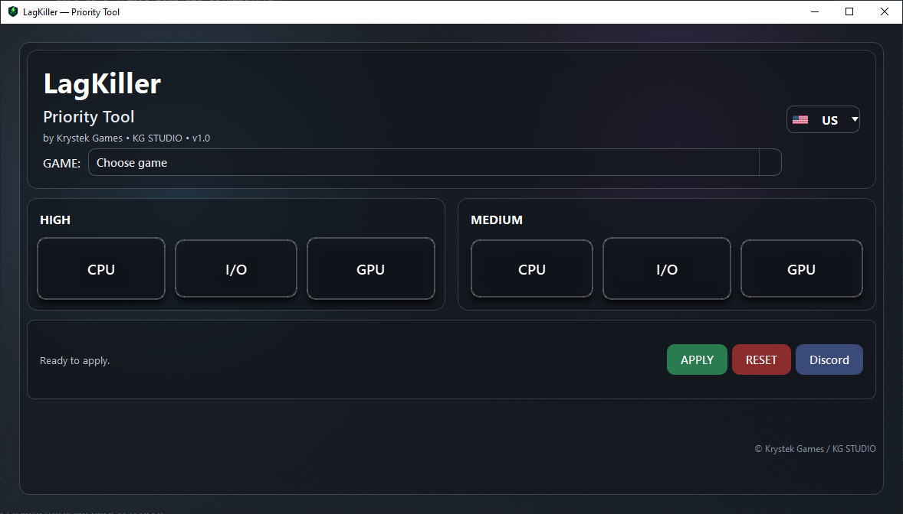
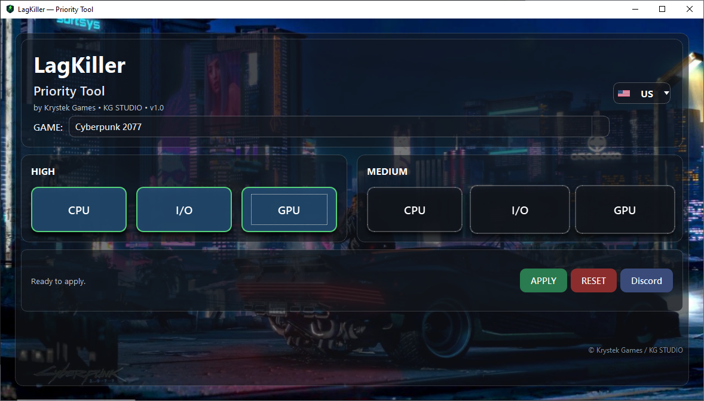

LagKiller optimizes CPU / I/O / GPU scheduling priorities for supported games using safe Windows registry keys. Reduce micro-stutter, keep frame-times stable, and focus resources where they matter.
Built for players who want consistent responsiveness without tweaking the OS by hand.
Toggle High/Medium priorities for CPU, I/O and GPU with clear, safe defaults per game.
Choose your game and LagKiller writes the correct Image File Execution Options → PerfOptions values for that EXE.
No services, no kernel hacks, no background miner vibes. Just documented Windows knobs, with easy rollback.
Cyberpunk2077.exe).HKLM\...\Image File Execution Options\<exe>\PerfOptions (requires admin). Remove with one click.

We ship a digitally signed installer and binaries. SmartScreen reputation improves over time.
“Reset” removes the registry keys so everything returns to stock in seconds.
Windows 10/11 (x64). Admin rights required only when applying or removing priorities.
Compare the SHA-256 hash:
SHA256: 0912614F2BBCDFD1D6612E7A9E04936A2B0829C8EF8D0605CF0F8FF0D43F2A5E
The installer is signed with KG STUDIO. In the file properties → Digital Signatures you should see the valid signature.
Examples: The Last of Us Part I/II, Cyberpunk 2077, Horizon Zero Dawn/Forbidden West, God of War (2018/Ragnarök), Red Dead Redemption 2, Hogwarts Legacy, ELDEN RING, Spider-Man Remastered / Miles Morales / Spider-Man 2…
Backgrounds change per game for a nice ambient touch.
Yes. We only write documented registry keys for process scheduling priorities. No services, drivers, or kernel changes. You can remove the keys with a single click (“Reset”).
Only to apply or remove settings (HKLM requires elevation). The app itself doesn’t run in the background.
It primarily improves responsiveness and frame-time stability. FPS gains are possible but not guaranteed—results vary per system and game.